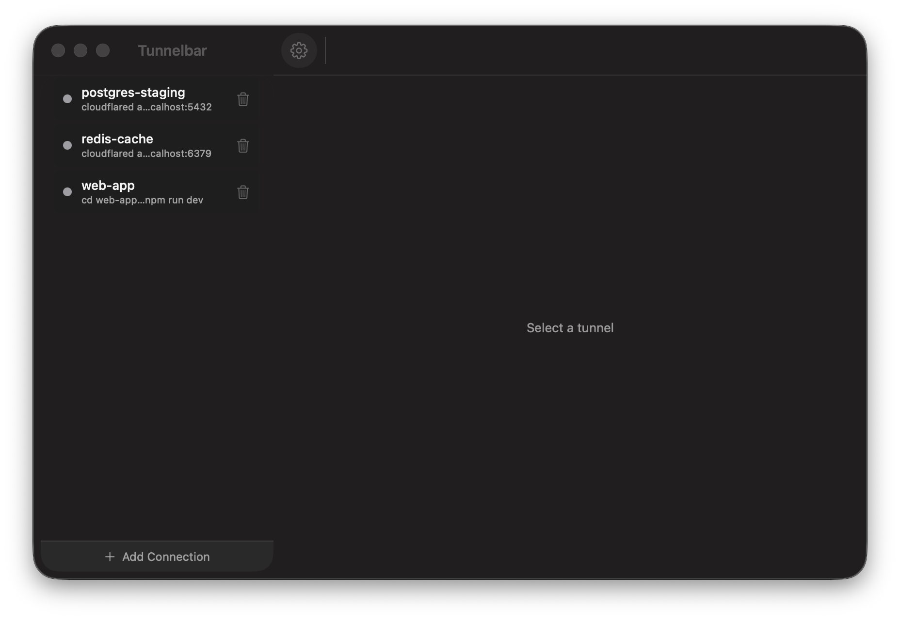

Manage your cloudflared tunnels — and any local service — from the macOS menu bar. No terminal juggling.
curl -fsSL https://tunnelbar.vercel.app/install.sh | bash
One command — installs to Applications and opens. macOS 14+ (Apple Silicon). · Download the DMG instead

Start, stop, restart, and watch every connection's status from the menu bar.
Paste a cloudflared command, npm start, ngrok — anything. Optional working directory.
Streaming per-connection logs. ⌘-click URLs and file paths to open them, like Terminal.
Optionally restart a connection that drops — but never one you stopped yourself.
Drag to reorder, delete inline, and back up or import your connections as JSON.
Light / dark / system theme, open-at-login, and a built-in check for updates.
Run the command above in Terminal. It downloads the latest release and installs Tunnelbar.app into Applications.
It opens automatically — the menu-bar icon appears at the top-right. No Gatekeeper prompt: the installer clears the download flag for you.
Add a connection and start it. If a command needs a tool you don't have (e.g. cloudflared), Tunnelbar tells you which one to install.
Tunnelbar is open-source and not notarized by Apple (no paid developer account), so the installer removes the
com.apple.quarantine flag on your behalf. Prefer to review first? Read
install.sh and the
source.